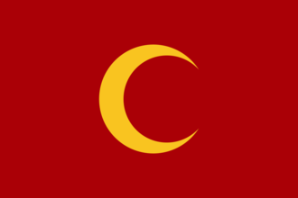
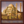

{kind=link}
| 伊比利亚 |
| 法兰西 |
| 低地 |
| 不列颠 |
| 北欧及波罗的 |
| 中欧 |
| 北德意志 |
| 南德意志 |
| 意大利 |
| 巴尔干及安纳托利亚 |
| 东欧 |
 | |
|---|---|
| 奥斯曼 | |
| 政府等级 | |
| 主流文化 | |
| 首都 | |
| 政体 |  奥斯曼帝国政府 |
| 国教 | |
| 学派 | |
| 科技组 | 安纳托利亚科技组 |
| 奥斯曼的理念 |
此信息可能已落后版本，最后更新于1.35 ----
|
| +5% 训练度 +3 异教容忍度 |
| +25% 陆军上限
|
|
|

奥斯曼（英文：Ottomans）雄踞欧亚大陆交界处，而它显然是这片大陆上最强大的国家之一；它信仰伊斯兰教  逊尼派，尊奉
逊尼派，尊奉  哈乃斐派。欧陆风云4开始于1444年11月11日，正是奥斯曼军队于瓦尔纳战胜基督教联军后的第二天。开局时，奥斯曼已占据了安纳托利亚半岛大部和巴尔干南部。对于新玩家来说，早期的游戏很可能集中在巩固该国在这些地区的地位。在国内，该国分裂为
哈乃斐派。欧陆风云4开始于1444年11月11日，正是奥斯曼军队于瓦尔纳战胜基督教联军后的第二天。开局时，奥斯曼已占据了安纳托利亚半岛大部和巴尔干南部。对于新玩家来说，早期的游戏很可能集中在巩固该国在这些地区的地位。在国内，该国分裂为 东正教和
东正教和 逊尼派信仰。在经济上，他们掌握着君士坦丁堡节点贸易的大部分权力，很容易接触到其他地方。
逊尼派信仰。在经济上，他们掌握着君士坦丁堡节点贸易的大部分权力，很容易接触到其他地方。
与其邻近的国家中，  拜占庭帝国和他的附庸
拜占庭帝国和他的附庸 雅典正瑟缩在君士坦丁堡以及莫里亚地区，几乎难逃被彻底征服的命运，西方的
雅典正瑟缩在君士坦丁堡以及莫里亚地区，几乎难逃被彻底征服的命运，西方的  塞尔维亚、
塞尔维亚、 瓦拉几亚等国家也几乎不过是一合之敌；而更远方的
瓦拉几亚等国家也几乎不过是一合之敌；而更远方的  奥地利、
奥地利、 匈牙利和
匈牙利和  波兰则强大得多，且都与奥斯曼有切齿之恨。而在亚得里亚海沿岸，意大利主要受到
波兰则强大得多，且都与奥斯曼有切齿之恨。而在亚得里亚海沿岸，意大利主要受到 神圣罗马帝国皇帝和阿拉贡
神圣罗马帝国皇帝和阿拉贡 阿拉贡的保护。除此之外，
阿拉贡的保护。除此之外， 威尼斯、
威尼斯、 热那亚、
热那亚、 医院骑士团等国占据了爱琴海上的数个岛屿，争夺着东方贸易的主导地位。安纳托利亚方面，
医院骑士团等国占据了爱琴海上的数个岛屿，争夺着东方贸易的主导地位。安纳托利亚方面， 詹达尔、
詹达尔、 拉玛赞、
拉玛赞、 杜勒卡迪尔等小突厥贝伊国同样不堪一击，还有拜占庭的残余
杜勒卡迪尔等小突厥贝伊国同样不堪一击，还有拜占庭的残余  特拉比松。更东方的
特拉比松。更东方的  白羊和
白羊和  黑羊两个游牧国家在高加索和托鲁斯山脉的南方，将奥斯曼与摇摇欲坠的
黑羊两个游牧国家在高加索和托鲁斯山脉的南方，将奥斯曼与摇摇欲坠的  帖木儿隔开。在南部，历史和贸易上的对手
帖木儿隔开。在南部，历史和贸易上的对手  马穆鲁克控制着一个扩展到非洲的庞大贸易帝国，而他们的附庸
马穆鲁克控制着一个扩展到非洲的庞大贸易帝国，而他们的附庸 汉志则控制着圣城
汉志则控制着圣城
总的来说，奥斯曼的环境十分优越，又兼之它的强大军事、经济实力以及宗教容忍，因而成为了新手入门的良好选择。除此之外，奥斯曼还有独有政体——奥斯曼帝国政府，其独特的后宫体制则保证了奥斯曼永远不会绝嗣，且常常能获得能力优秀的继承人。
 奥斯曼开局时拥有独特的
奥斯曼开局时拥有独特的  奥斯曼帝国政府政府改革，并可通过结束
奥斯曼帝国政府政府改革，并可通过结束  内部权力斗争灾难解锁更为强大的
内部权力斗争灾难解锁更为强大的  现代化奥斯曼政府或者
现代化奥斯曼政府或者  改组奥斯曼政府政府改革。
改组奥斯曼政府政府改革。
|
|
只适用于DLC文明的摇篮激活时。 |
奥斯曼帝国政府可在直属州的互动界面内将直属州分配给帕夏，它会为直属州内所有省份带来以下效果：
通过完成  设立帕夏任务可将帕夏的 +20% 本地最低自治度惩罚降低到 +10%。
设立帕夏任务可将帕夏的 +20% 本地最低自治度惩罚降低到 +10%。
此外，在采用  行省管辖制度政府改革后，所有拥有帕夏的异文化省份将额外获得
行省管辖制度政府改革后，所有拥有帕夏的异文化省份将额外获得  +33% 本地税收修正以及
+33% 本地税收修正以及  -1 本地叛乱度。
-1 本地叛乱度。
收回帕夏土地会使直辖内所有省份在10年内获得  +5 本地叛乱度的惩罚。
+5 本地叛乱度的惩罚。
 奥斯曼帝国政府以及
奥斯曼帝国政府以及  现代化奥斯曼政府都拥有独特的后宫机制，在统治者年满30岁且无继承人的情况下将触发后宫事件，从三个选项中选择一个继承人，且其能力值均可见。
现代化奥斯曼政府都拥有独特的后宫机制，在统治者年满30岁且无继承人的情况下将触发后宫事件，从三个选项中选择一个继承人，且其能力值均可见。
|
|
只适用于DLC文明的摇篮激活时。 |
耶尼切里，又称土耳其禁卫军。是绑定奥斯曼政府、现代化奥斯曼政府、改组奥斯曼政府、罗姆苏丹国、耶尼切里军政府以及现代化土库曼联邦政府改革的特殊部队，只能招募为步兵，在军队面板中为绿色背景。
| −10% | 受到的火力伤害 | |
| −10% | 受到的冲击伤害 | |
| +100% | 补员花费 | |
| +100% | 操练效率 |
耶尼切里可以通过直属州互动，或宏招募编辑器进行招募。每招募一支耶尼切里军团，需要花费3  军事点数，需要注意的是招募耶尼切里军团既不需要花费人力也不需要花费金钱，初始招募状态的耶尼切里军团只有10%的兵力与士气。耶尼切里军团规模与全国异教省份占全国总发展度的比例，以及总陆军上限有关。耶尼切里军团只能在异教省份招募，拥有耶尼切里军政府的国家可在正统信仰省份招募。过度依赖耶尼切里军团可能会导致耶尼切里政变灾难，这一灾难只在
军事点数，需要注意的是招募耶尼切里军团既不需要花费人力也不需要花费金钱，初始招募状态的耶尼切里军团只有10%的兵力与士气。耶尼切里军团规模与全国异教省份占全国总发展度的比例，以及总陆军上限有关。耶尼切里军团只能在异教省份招募，拥有耶尼切里军政府的国家可在正统信仰省份招募。过度依赖耶尼切里军团可能会导致耶尼切里政变灾难，这一灾难只在  地理大发现时代之后发生。
地理大发现时代之后发生。
耶尼切里军团规模与全国异教省份占全国总发展度的比例，以及总陆军上限有关。若一个国家异教省份发展度占全国发展度的50%，则可招募相当于本国陆军上限50%数量的耶尼切里军团，计算公式如下：
[math]\displaystyle{ (\text{陆军上限} \cdot \frac{\text{异教省份发展度}}{\text{总发展度}} ) \cdot (1 + \text{特殊兵种上限修正}) }[/math]
达成相关要求可以在正统信仰省份招募耶尼切里军团，计算公式如下：
[math]\displaystyle{ (\text{陆军上限} \cdot \frac{\text {异教省份发展度 + 正统信仰省份发展度}}{\text{总发展度}} ) \cdot (1 + \text{特殊兵种上限修正}) }[/math]
奥斯曼帝国政府的效率以及内部稳定由 腐化度 （英文：Decadence）衡量。腐化度是一个处于 0 至 100 区间的数值，如果该数值达到100，则内部权力斗争灾难将可能爆发。将鼠标悬停于政府界面的腐化度进度条可查看当前腐化度。只有  奥斯曼政府使用此机制，经过改革后的奥斯曼政府将永久摆脱腐化度影响。
奥斯曼政府使用此机制，经过改革后的奥斯曼政府将永久摆脱腐化度影响。
腐化度给予的负面效果将随着腐化度的变化进行线性变化，当腐化度达到 100 时，将给予下列修正：
月度腐化度获得受到下列因素影响：
此外，每点过度扩张将会使得奥斯曼的月度腐化度获得额外 +0.25%修正，最大为 +25%。该修正为乘算而非加算。
通过完成阶层议程将立刻 降低 腐化度，反之则会 增加 腐化度。
统治者指挥的军队在赢得战役后也将立刻 降低 腐化度。
除上述修正外，奥斯曼在每个时代都会获得一个独特的腐化度修正以模拟其在历史上的崛起与衰落。
奥斯曼帝国政府的特殊附属国「行省」相关的内容已在其他页面进行详细论述，请移步行省。
另参见：奥斯曼任务/基础游戏
奥斯曼拥有大量的历史趣味事件，展现了奥斯曼帝国不同时期军事、内政、外交、经济、宗教等方面的情形；部分事件仅可在完成特定任务后触发。
由于事件数目过多，本百科将奥斯曼的事件分别列于两个页面。
奥斯曼的两种特殊政府机制——后宫机制和腐化度事件分别由一组独有事件。
拥有省份
|
|
只适用于DLC霸业激活时。 |
奥斯曼在腐化度达到 100 时，将触发  灾难“内部权力斗争”。在这一灾难期间，耶尼切里政变、宫闱之谋、行省叛乱和帕夏堕落等4个其它灾难均可同时发生，将给予奥斯曼一系列严重的负面影响，引发长期的内乱以及停滞。灾难只能通过完成一组特有任务来结束。
灾难“内部权力斗争”。在这一灾难期间，耶尼切里政变、宫闱之谋、行省叛乱和帕夏堕落等4个其它灾难均可同时发生，将给予奥斯曼一系列严重的负面影响，引发长期的内乱以及停滞。灾难只能通过完成一组特有任务来结束。
|
|
这条信息可能已不适合当前版本，最后更新于1.35。 |
由于我们国家的继承人因为年龄太小还做不了统治者，他的母亲科塞姆苏丹已经正式请求成为奥斯曼帝国的摄政。她之前已经通过她的丈夫和一个儿子领导着这个伟大的国家。如果她上台，那么她所统治的时期将会被称作「女人的苏丹国」。她从未向别人的心血来潮所低头，但是她子孙的疯狂与无能是一个令人担心的问题。科塞姆苏丹承诺她将会运用她的财富了支持埃及沙漠中的灌溉工程。我们应不应该允许她在她的儿子成年之前统治这个国家，并尝试去影响她的行为？
触发条件
|
平均发生时间
200 月 |
立即生效
| |
让她成为苏丹皇太后，奥斯曼帝国的摄政！
她作为顾问才能更好地服侍这片土地。
| |
|
|
这条信息可能已不适合当前版本，最后更新于1.35。 |
说来令人啧啧称奇，为了避免后宫中的勾心斗角，奥斯曼苏丹们在很长的时间里都没有正妻。但是苏莱曼大帝却将许蕾姆苏丹罗克塞拉娜立为正宫，尊其地位于整个帝国所有的女人之上。苏丹采纳她的外交和军事意见，甚至让她作为帝国和其邻国基督教君主们之间的正式信使。她说服苏莱曼限制克里米亚人在她的家乡——乌克兰的奴隶掠夺行为；同时也支持学校，清真寺和医院的建设。
触发条件
|
平均发生时间
200 月 |
立即生效
| |
让她成为一个正式的顾问——政治家
让她成为一个正式的顾问——间谍总管
| |
|
|
这条信息可能已不适合当前版本，最后更新于1.35。 |
作为赛利姆一世的妻子，艾谢·哈夫莎苏丹是史上第一位「瓦利德苏丹」——奥斯曼帝国的皇太后。她与当时还是太子的赛利姆的婚姻使太子获得了一个强大而宝贵的盟友——她的父亲克里米亚汗明里·格来，并在他争夺苏丹之位的过程中起到了极大的作用。每年人们都会举办梅塞节以纪念在艾谢·哈夫莎苏丹生病时所服用的由草药和香料制成的药汁。她以她儿子实际意义上的摄政的名义统治着国家，象征着苏丹皇太后地位的转变和她权力的扩大。
触发条件
|
平均发生时间
200 月 |
立即生效
| |
一位女性统治者？为什么不呢？
继续让她在她儿子的身边做顾问
| |
|
|
这条信息可能已不适合当前版本，最后更新于1.35。 |
作为穆拉德三世的第一位也是唯一的一位长期的妻妾，莎菲耶苏丹在她丈夫迎娶了更多侍妾、并有了20个儿子和27个女儿后，感到了一丝苦涩。不过她不久便忘记了这些，并为穆拉德苏丹献上更多的美姬，让他深表感激。穆拉德十分珍视她，并向他咨询政治上的问题。他们的独子穆罕默德在穆拉德死后成为了苏丹，而莎菲耶则成为了苏丹皇太后，一个有着相当权力的头衔。她与白人宦官总长，也就是皇家内宫总管的加藏菲·阿加一同管理着[Root.GetAdjective]的政坛。在她的儿子外出征战时，莎菲耶留在都城掌管财政，同时也成功地说服他的儿子在许多政治问题上听从她的意见。一位威尼斯商人是这样描述莎菲耶的：「一个守信并值得信任的女人，仅凭她一人，我就能够相信君士坦丁堡；因此你总能在令她感激你的同时得到好处。」
触发条件
|
平均发生时间
200 月 |
立即生效
| |
她将在经济方面给我们建议。
让她做顾问，她的外交才能将能使她大显身手。
| |
|
|
这条信息可能已不适合当前版本，最后更新于1.35。 |
在苏丹塞利姆二世的统治时期，努尔巴努苏丹是她最宠爱的一个妻子。出生在威尼斯，原名蕾切尔·奥利维亚·德·纳西的她，在被绑架到塞利姆王子的后宫后，被改名为阿费夫·努尔巴努苏丹。由于她的美貌与智慧，以及她的孩子已经被确定为继承人这一事实，塞利姆常常向她咨询国事，并在许多问题上都尊重了她敏锐的判断。在她丈夫去世时，她的儿子穆拉德正在外地担任地方执政。努尔巴努认识到儿子的缺席和老苏丹的去世创造了夺取皇位的绝佳机会。幸运的是，塞利姆二世是在后宫中去世的，而因为后宫戒备森严，没有人知道皇帝已经死了。她将此事保密，将尸体藏在冰柜中并召唤她的儿子回到首都。穆拉德在12天后赶到，而在塞利姆的死讯被公开后，穆拉德成为了苏丹，而努尔巴努就成为了苏丹皇太后。如今的努尔巴努是一个强大的人物，权势巨大，声名远扬。她对政府的管理十分有效，她的外交技巧也令人惊叹。
触发条件
|
平均发生时间
200 月 |
立即生效
| |
选择条件
除了是苏丹皇太后之外，她还将成为我们的顾问。
我们会让她统治$COUNTRY$。
| |
脚本代码位于：/Europa Universalis IV/decisions/Ottoman.txt。
|
|
这条信息可能已不适合当前版本，最后更新于1.35。 |
通过吸收新征服的领土上的年轻人服役，我们可以显著加快征召进度。让我们进一步推行并改良这种制度来适应我们国家的扩张吧。
潜在需求
|
接受
|
效果
| |
AI决议权重：
|
|
这条信息可能已不适合当前版本，最后更新于1.35。 |
在耶尼切里的薪水单上有很多人不是真正的耶尼切里，或者德不配位。让我们强制他们接受一次广泛的审查来确认谁能够留下，让秩序与纪律重归军队。
潜在需求
|
接受
|
效果
| |
AI决议权重：
|
|
这条信息可能已不适合当前版本，最后更新于1.35。 |
耶尼切里军团的权力和影响力已经增长过头了。必须用我们的大炮和钢刀来阻止他们！
潜在需求
|
接受
|
效果
| |
AI决议权重：
|
|
这条信息可能已不适合当前版本，最后更新于1.35。 |
耶尼切里军团的权力和影响力已经增长过头了。必须用我们的大炮和钢刀来阻止他们！
潜在需求
|
接受
|
效果
| |
AI决议权重：
|
|
这条信息可能已不适合当前版本，最后更新于1.35。 |
耶尼切里军团的权力和影响力已经增长过头了。必须用我们的大炮和钢刀来阻止他们！
潜在需求
|
接受
|
效果
| |
AI决议权重：
|
|
这条信息可能已不适合当前版本，最后更新于1.35。 |
这座新近被征服的壮丽辉煌的都市将成为我们伟大的首都。君士坦丁堡是世界上最宏伟的城市，如今是我国军队武勋的象征，我们的政治实力也将变得更强大。
| 潜在需求 | 接受
|
效果
| |
AI决议权重：
|
|
这条信息可能已不适合当前版本，最后更新于1.35。 |
虽然通常不是被政变后人们的第一选择，但也许可以与耶尼切里谈判，说服他们归还一些权力。
潜在需求
|
接受 |
| 效果 | |
AI决议权重：
|
|
这条信息可能已不适合当前版本，最后更新于1.35。 |
德夫希尔梅制度已经被极大破坏了，穆斯林家庭将他们的孩子偷偷送进耶尼切里队伍，而异教属国则只派出一些弱兵来打发我们。我们必须抢在耶尼切里丧失几率之前，尽快扭转这种局面。
潜在需求
|
接受
|
效果
| |
AI决议权重：
|
|
这条信息可能已不适合当前版本，最后更新于1.35。 |
伊斯兰再次崛起成为世界上占主导地位的强权。随着奥斯曼哈里发的崛起，穆斯林国家的文化和技术进步正在蓬勃发展。 我们生活在第二个伊斯兰黄金时代，千真万确。
潜在需求
|
接受
|
效果
| |
AI决议权重：
 奥斯曼是游戏中最强大的国家，如果你是新手的话值得一试。
奥斯曼是游戏中最强大的国家，如果你是新手的话值得一试。
突厥天降之前，奥斯曼的首要目标主要是如下几个：
1444年11月11日布局：
在任何情况下，都推荐先对  拜占庭下手。奥斯曼前期扩张最缺的是人力，最过剩的是侵略扩张，而对拜占庭动手则会在伯罗奔尼撒半岛和拜拜的盟友身上浪费大量人力——但在君士坦丁堡围城成功后，有事件选项可以可以0ae直接获得君士坦丁堡以及墨森布里亚，同时
拜占庭下手。奥斯曼前期扩张最缺的是人力，最过剩的是侵略扩张，而对拜占庭动手则会在伯罗奔尼撒半岛和拜拜的盟友身上浪费大量人力——但在君士坦丁堡围城成功后，有事件选项可以可以0ae直接获得君士坦丁堡以及墨森布里亚，同时  拜占庭变身
拜占庭变身  摩里亚成为你的附庸。注意：
摩里亚成为你的附庸。注意：
对于安纳托利亚小国来说，可以直接附庸  拉玛赞，攫取君堡后可以直接附庸
拉玛赞，攫取君堡后可以直接附庸  杜勒卡迪尔和
杜勒卡迪尔和  特拉比松。人力能不浪费就不浪费。如果附庸了
特拉比松。人力能不浪费就不浪费。如果附庸了  白羊并把特拉比松塞给它，其有概率事件直接将其转成逊尼派土耳其文化。
白羊并把特拉比松塞给它，其有概率事件直接将其转成逊尼派土耳其文化。
 克里米亚在现任君主升天后会选择是否亲近奥斯曼，成为奥斯曼的朝贡/卫戍或拒奥斯曼于国门之外，AI选啥主要看脸。与克里米亚保证一定关系可以任务树确保其必选亲近，但如果在克里米亚已经是附庸或被征服的情况下点选任务，则会获得骑兵buff或骑兵增益，主要看玩家具体喜好，但如果打算直接亲近的话，布局趁早。
克里米亚在现任君主升天后会选择是否亲近奥斯曼，成为奥斯曼的朝贡/卫戍或拒奥斯曼于国门之外，AI选啥主要看脸。与克里米亚保证一定关系可以任务树确保其必选亲近，但如果在克里米亚已经是附庸或被征服的情况下点选任务，则会获得骑兵buff或骑兵增益，主要看玩家具体喜好，但如果打算直接亲近的话，布局趁早。
 奥斯曼前期的三大敌手：
奥斯曼前期的三大敌手： 威尼斯、
威尼斯、 马穆鲁克 与
马穆鲁克 与 匈牙利，以及一些零碎的方向
匈牙利，以及一些零碎的方向
威尼斯方向
马穆鲁克方向
匈牙利方向
以及两个吃地造核以外的扩张方式：奥斯曼入侵与外交附庸，最终目标都是降低ae，并建立行省
腐化度导致的灾难可以转型为西欧兵种组
任何以君士坦丁堡为首都的国家，其天命都在印度，且印度极其适合开行省转贸易，让远东财富滚滚流入君士坦丁堡
意大利后续：可以成立土耳其语版的罗马帝国（单纯换国名），同时拉丁文化组无惩罚，也可以在意大利开一堆行省
奥斯曼十分易于中期即扩张至完全体，然后封档
奥斯曼属于  安纳托利亚科技组，1444年开局时行政科技、外交科技和军事科技均为3级，并且已经接受了封建制度思潮。如果你冲到5级军事军科，那么你会对
安纳托利亚科技组，1444年开局时行政科技、外交科技和军事科技均为3级，并且已经接受了封建制度思潮。如果你冲到5级军事军科，那么你会对 西方兵种组、
西方兵种组、 穆斯林兵种组和
穆斯林兵种组和 东方兵种组具有明显优势。
东方兵种组具有明显优势。
概览：
奥斯曼早期的理念选择主要服务于扩张。
这需要玩家愿意牺牲一些稳定度进行破停宣战大国，如果是老练的玩家可以尝试在1500年成立 罗马帝国，而1.33的
罗马帝国，而1.33的 罗马帝国理念有宝贵的25枣核花费和5行政效率，以及减两叛乱，这都使得用罗马来打球成为最好的选择，而
罗马帝国理念有宝贵的25枣核花费和5行政效率，以及减两叛乱，这都使得用罗马来打球成为最好的选择，而 奥斯曼则因为地理位置成为了成立罗马的最好人选。
奥斯曼则因为地理位置成为了成立罗马的最好人选。
1444年到1450：首先吃掉 拜占庭和
拜占庭和 伊庇鲁斯，这是不言而喻的（应当在1447年前完成），随后攻击
伊庇鲁斯，这是不言而喻的（应当在1447年前完成），随后攻击 白羊。
白羊。
1450年到1460：接下来攻击 卡拉曼
卡拉曼 詹达尔等国，吃光安纳托利亚，并造一个
詹达尔等国，吃光安纳托利亚，并造一个 马穆鲁克的宣称，宣战它并获取叙利亚。并迅速吞并
马穆鲁克的宣称，宣战它并获取叙利亚。并迅速吞并 塞尔维亚和（如果可以）
塞尔维亚和（如果可以） 瓦拉几亚
瓦拉几亚
1460到1470： 威尼斯和
威尼斯和 那不勒斯以及
那不勒斯以及 教宗国和其他意大利国家，确保这一时期你吞并了整个意大利
教宗国和其他意大利国家，确保这一时期你吞并了整个意大利
1470-1480：反复破停吃光 卡斯蒂利亚/
卡斯蒂利亚/ 西班牙和
西班牙和 马穆鲁克
马穆鲁克
1480到1490行动：德意志地区的必需地，并且吃至少2次 法兰西
法兰西
1490到1500行动：吃光 法兰西，
法兰西， 荷兰，并且取得伦敦和约克就可以成立罗马了，记得检查必需省份
荷兰，并且取得伦敦和约克就可以成立罗马了，记得检查必需省份

|

Parisian Pasha 巴黎帕夏 在巴黎任命帕夏。 |

Mehmet's Ambition 穆罕默德的野望 以奥斯曼开局，在公元1500年前拥有或其核心行省拥有所有成立罗马帝国需要的省份。 |
| 伊比利亚 |
| 法兰西 |
| 低地 |
| 不列颠 |
| 北欧及波罗的 |
| 中欧 |
| 北德意志 |
| 南德意志 |
| 意大利 |
| 巴尔干及安纳托利亚 |
| 东欧 |
| 北非 |
| 东非 |
| 中非 |
| 东南非 |
| 西非 |
| 西南非 |
| 近东 |
| 波斯及中亚 |
| 北亚 |
| 东亚 |
| 东南亚 |
| 印度 |
| 中美洲 |
| 墨西哥 |
| 北美东北 |
| 北美东南 |
| 北美中西部 |
| 部落联盟国家 |
| 前殖民领国家 | |
| 海盗共和国 |
| 南美北部 |
| 安第斯山区 |
| 南美东部 |
| 南美南部 |
| 前殖民领国家 |
| 澳大利亚 |
| 南太平洋 |
| 北太平洋 |
| 前殖民领国家 |